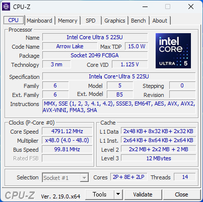
ZBOX CI675 / CI655 nano音のない1.79L — 映像を楽しむ場所にも、仕事に集中する席にも
ファンを一つも持たない 1.79L のミニPC「ZBOX CI675 nano / CI655 nano」。 本レビューは速さを競う検証ではなく、「静かな場所でリッチコンテンツを楽しむ機として、あるいは仕事に集中する事務機として、どこまで使えるか」を主題に、 1080p動画の2時間連続再生・画面まわり・体感を左右するシングルスレッド性能・全コアのスループットを実測し、 約1秒間隔の温度／電力ログから、15Wの枠を使い切るファンレス機の持続挙動を中立に読み解きます。 計測したのは、スタンダードクラスにあたる CI655 nano（Core Ultra 5 225U） です（§01）。
完全ファンレス 可動部ゼロ
1.79L 204×129×68mm
12コア/14スレッド Core Ultra U
最大3画面 HDMI 2.1 ＋ DP1.4 ×2
Wi-Fi 7 / Bluetooth 5.4
M.2 ×2 PCIe 4.0 x4
VESA プレート同梱
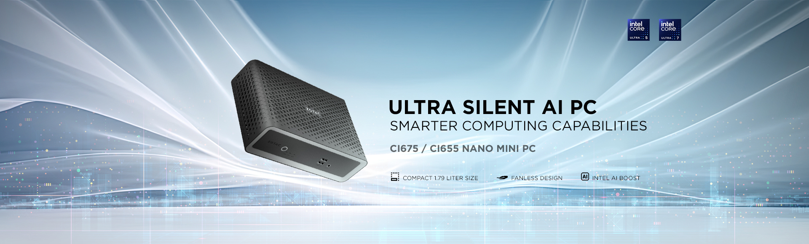
実測サマリー（3行）
- 1080p 2時間連続再生は 開始30分以降 60〜61°C・6.3W・CPU負荷1.1% でほぼ定常。動画の常時表示は本機にとって「ほぼ空転」の軽さ。
- 体感を決めるシングルスレッドは ファン付きの上位機とほぼ同値（CrystalMark cpu_single 11,094／Core Ultra 5 225H 11,046・Core Ultra 7 255H 10,925）。差が出るのは全コアを使う一括処理で、7-Zip はH系2機の約52〜58%。
- ファンレスの持続挙動: 持続CPU電力は 中央値 14.9〜15.0W でTDP枠15Wに張り付き、パッケージ温度は持続 60〜84°C（瞬間最大91°C・90°C超は全体の0.1%）。5種13回すべて停止なしで完走。
CI675 と CI655 — 筐体も冷却も I/O も同じ。選ぶのは CPU グレードだけ
ZBOX CI シリーズは、可動部を持たないファンレス設計のミニPCです。今回の CI675 nano / CI655 nano は Intel Core Ultra（開発コード Arrow Lake-U）世代を載せた 1.79L モデルで、 2機の違いは CPU グレードだけ — 筐体・冷却機構・インターフェース・メモリー上限・ストレージ構成はすべて共通です。
| 項目 | CI675 nano | CI655 nano（本記事の実測機） |
|---|---|---|
| プロセッサー | Core Ultra 7 255U | Core Ultra 5 225U |
| 動作クロック | 1.2GHz / 最大 5.2GHz | 1.5GHz / 最大 4.8GHz |
| コア / スレッド | 12コア / 14スレッド | |
| グラフィックス | Intel Graphics（CPU内蔵）／ NPU（Intel AI Boost）内蔵 | |
| メモリー | DDR5-5600 / 5200 SO-DIMM ×2（最大 64GB） | |
| ストレージ | M.2 NVMe PCIe 4.0 ×4（2280）×2 ※1基は SATA3 兼用 | |
| 映像出力 | HDMI 2.1 ×1 ＋ DisplayPort 1.4 ×2（各 最大 4096×2160@60Hz）・最大3画面 | |
| ネットワーク | Gigabit Ethernet ×1 / Wi-Fi 7 / Bluetooth 5.4 | |
| 冷却・外形 | 完全ファンレス（パッシブ）／ 204 × 129 × 68 mm・約 1.79L | |
| 電源 | AC アダプター（DC 19V・65W） | |
| 盗難対策 | セキュリティロックスロット（Kensington 対応・側面） | |
本レビューで実測したのは CI655 nano（Core Ultra 5 225U）です。 CI675 nano の実測データは本記事にはありません。以降のグラフ・温度・スコアはすべて CI655 の値で、 CI675 については上表のカタログ仕様の併載にとどめます（推定値は掲載しません）。 筐体と冷却機構が共通であることは、§04 の分解図のとおりです。
ZBOX PRO との住み分け
同じ「ファンレスのミニPC」でも、ZBOX PRO（産業向けの S35 シリーズなど）は
シリアルポートやウォッチドッグ、広い動作温度範囲といった組み込み・産業設備向けの装備に振った構成です。
対して本機 CI nano は、同じ無音・省スペースでありながら、
12コア/14スレッドのCore Ultraで事務作業の実性能を持たせた側にあります。
産業用途にも使えますが、軸足はオフィスの事務端末と簡易マルチメディアです。
搭載するCPU・グラフィックスの基礎知識
CPUCore Ultra 5 225U とは
Intel Core Ultra シリーズ2（Arrow Lake-U）の省電力モデル。12コア / 14スレッドで、内訳は高性能のPコア2基（4スレッド）、高効率のEコア8基、さらに待機時を担う低消費電力のLPコア2基という構成です。
基本の電力枠は TDP 15W（12W / 15W / 28W の3段階を持つ）。ノートPC向けの省電力設計を、ファンのない筐体に載せているのが本機です。
GPU内蔵 Intel Graphics と NPU
CPUに内蔵されたグラフィックス（4 Xeコア / 64 EU・最大2.0GHz）。単体グラフィックスカードは搭載しません。動画のデコード／エンコードは専用回路が担うため、再生時のCPU負荷はごく小さく収まります。
AI処理を担う NPU（Intel AI Boost） も内蔵しますが、本レビューの計測項目にAI系ベンチマークは含みません（仕様としての記載にとどめます）。
実機のハードウェア確認（CPU-Z / GPU-Z）
計測に使った個体の構成を、CPU-Z と GPU-Z で確認します。CPUは Core Ultra 5 225U、 コア構成は Pコア2（4スレッド）＋ Eコア8 ＋ LPコア2 の 12コア/14スレッド。TDP Limit は 15.0W と表示されます。 マザーボードのSMBIOS表記は ZBOX-CI675NANO/CI655NANO と両モデル共通の名称を返すため、 機体の判別はCPUで行っています。
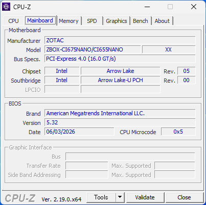
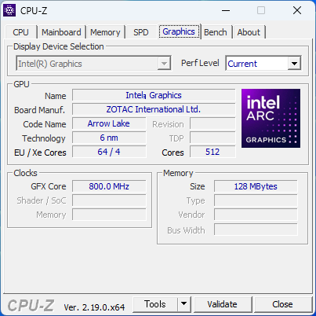
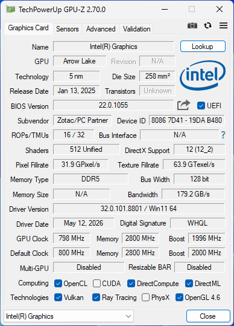
テスト環境・計測方法
本機はベアボーンのため、メモリー・SSD・OS はテスト個体の構成です。 各テストは 3回ずつ独立に実行し、中央値を代表値とします（120分の連続再生のみ1回）。 電源プランは高パフォーマンス。全テストを通して 約1秒間隔でCPUの温度・電力・クロック・負荷を記録しており、 §10 以降の温度の話はこのログにもとづきます。
| 本体 | ZOTAC ZBOX CI655 nano（ベアボーン） |
|---|---|
| CPU | Intel Core Ultra 5 225U（12コア / 14スレッド・TDP 15W） |
| グラフィックス | CPU内蔵 Intel Graphics（ドライバー 32.0.101.8801） |
| メモリー | DDR5-5600 SO-DIMM 16GB ×2（32GB・テスト個体構成） |
| ストレージ | 1TB NVMe SSD（PCIe 4.0 x4・システムドライブ／テスト個体構成） |
| OS | Windows 11 Home 26200（25H2） |
| 電源 | AC アダプター（DC 19V・65W） |
| 電源プラン | 高パフォーマンス |
| 計測日 | 2026-08-08 |
計測項目
3DMark Night Raid（内蔵GPU向けの軽量3D）／ 7-Zip 26.00（全コアの圧縮・展開スループット）／
VLC 3.0.23 による 1080p 動画の120分ループ再生 ／ CrystalMark Retro 2.1.0（CPU・2D描画・ディスクの総合）／
CrystalDiskMark 9.0.3（システムドライブ）の5種・計13回。
ストレージ関連の値はテスト個体のSSD構成に依存する参考値で、機種の優劣として扱いません。
置けるか・つなげるか・静かか — 外観と設置性
性能の話に入る前に、モノとしての把握を済ませておきます。外形は 204 × 129 × 68 mm（約1.79L）。 A4用紙（297×210mm）より小さい設置面積で、机上ならモニターの脇、什器なら棚板1段に収まる寸法です。 この節の内容は CI675 nano と CI655 nano で共通です。
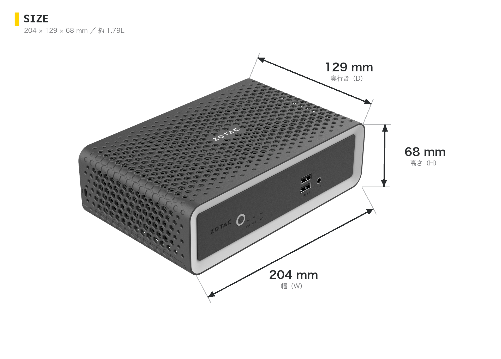
同梱物 — VESAプレートが入っている
ベアボーン構成の同梱物は、本体・ACアダプター・電源コード・Wi-Fiアンテナ・USBドライブ・クイックスタートガイド、 そして VESAマウントプレート（取り付けネジ付き）。 モニター背面への固定が買った時点で完結するため、机上を占有しない設置がそのまま選べます。
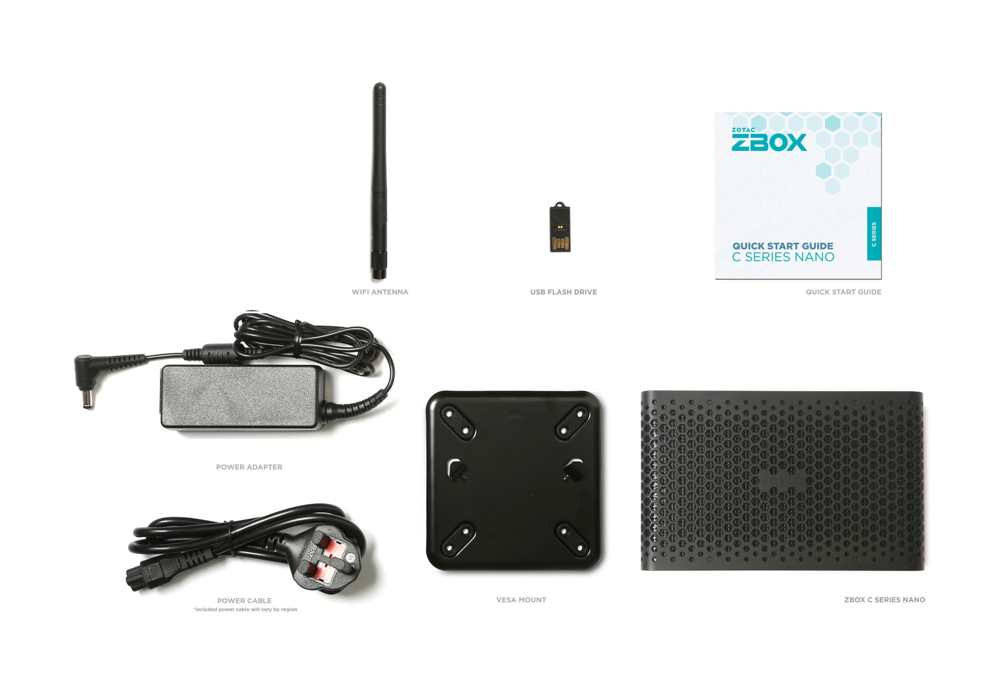
設置は3通り — 机上・什器内・モニター背面
設置は机上の横置き、什器や棚への収納、同梱のVESAプレートによるモニター背面への固定の3通りがそのまま選べます。 ファンレスのため吸気・排気の向きを考える必要はありませんが、天面と側面のハニカム開口が放熱面を兼ねるため、 この開口を塞がない置き方が基本です。周囲の空気が動きにくい什器内などに収める場合は温度条件が変わります （§11 の測定条件を参照）。
前面 — 手の届く位置に USB 2ポート
前面は電源ボタン、状態LED（電源 / ストレージ / Wi-Fi）、USB 3.2 Type-A ×2、マイク/ヘッドホンのコンボ端子。 USBメモリーの抜き差しやヘッドセットの接続を、本体を回さずに済ませられます。
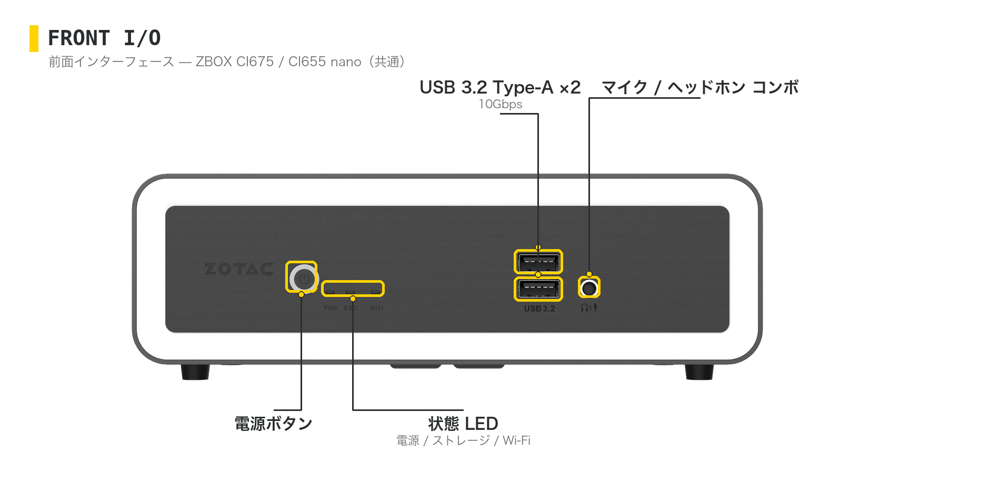
背面 — 3画面出力と、有線・無線の両方
背面は HDMI 2.1 ×1 ＋ DisplayPort 1.4 ×2 で最大3画面（各 最大 4096×2160@60Hz）。 USB は Type-A ×2 と Type-C ×1（いずれも 10Gbps）、加えて USB 2.0 ×1。 有線LANは Gigabit Ethernet、無線は Wi-Fi 7 / Bluetooth 5.4 で、アンテナ端子が1系統出ています。 事務端末としては、2画面＋周辺機器を挿してもポートが余る構成です。
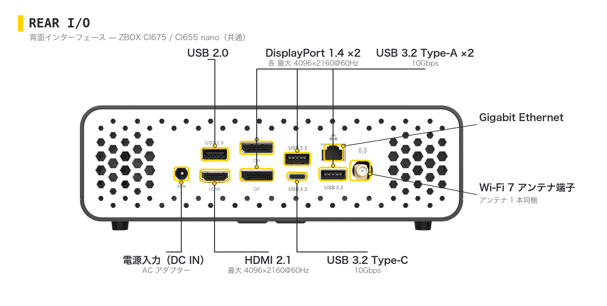
盗難対策 — 側面にロックスロット
側面にセキュリティロックスロット（Kensington 対応）を備えます。 受付や会議室、相談ブースのように人の出入りがある場所でも、ワイヤーロックで本体ごと固定できます。
中身 — 筐体そのものがヒートシンク
本機がファンなしで成立している理由は、内部構造を見ると分かります。 基板の熱はヒートパイプで筐体側へ渡され、外装の内側にびっしり立った金属フィンから、 天面と側面のハニカム開口を通って逃げていきます。回転部品が一つもないため、 稼働音・振動が構造的に発生しません。
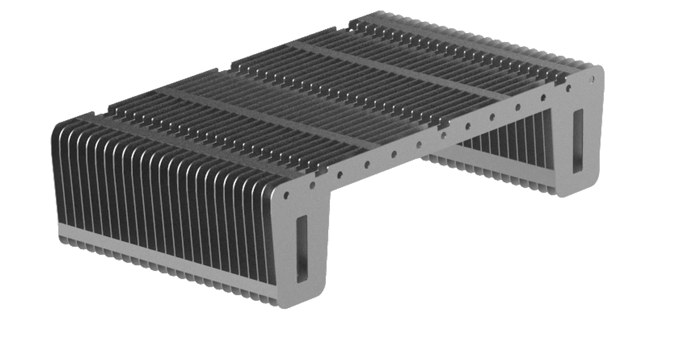
ほこりを吸い込む要因がない — 保守と設置環境の話
ファンレスであることは、静かさと同じくらいほこりに効きます。ファンで冷やす機種は、 空気を筐体内へ送り込む過程でほこりも一緒に取り込み、ヒートシンクやフィルターに積もっていきます。 これが進むと風量が落ちて温度が上がり、清掃という保守作業が定期的に必要になります。
本機にはその空気の流れを作る部品がありません。放熱は筐体表面からの自然放熱に任せているため、 ほこりを積極的に吸い込む要因がなく、吸気フィルターの清掃やファンの交換といった保守が発生しません。 店頭・工場の事務所・什器の中など、ほこりの多い場所や手の届きにくい場所へ置く機器ほど、 この差は運用コストとして効いてきます。
この点について
本レビューでは防塵性能そのもの（IP 等級や粉塵環境での耐久）は計測していません。
ここで述べているのは「強制的に空気を吸い込む機構を持たない」という構造上の性質であり、
開口部からのほこりの侵入が皆無という意味ではありません。長期運用では設置環境に応じた清掃をご検討ください。
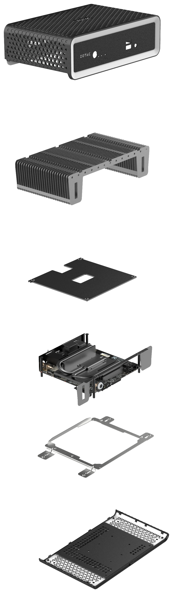
クリックで拡大
保守アクセス
メモリーは SO-DIMM ×2（最大64GB）、ストレージは M.2 NVMe PCIe 4.0 ×4（2280）が2基で、うち1基は SATA3 兼用。
ベアボーンのため、導入時に業務に合わせた容量を選べます。
簡易マルチメディア — 1080pを2時間、6.3W・60°Cで流し続ける
受付の案内表示、会議室の資料表示、店頭のループ再生。映像を流し続ける機として使う場合を想定し、 1080p動画の 120分連続ループ再生を実行しました。結果は 停止なしで完走、 再生レートは 1.0004（ほぼ等速）、D3D11VA によるハードウェアデコードが有効に働いています。
| 経過 | パッケージ温度 中央値 | CPU電力 中央値 | 平均CPU負荷 |
|---|---|---|---|
| 0–15分 | 67°C | 9.2W | 0.9% |
| 15–30分 | 62°C | 6.3W | 1.0% |
| 30–45分 | 61°C | 6.3W | 1.1% |
| 45–60分 | 60°C | 6.3W | 1.2% |
| 60–75分 | 60°C | 6.3W | 1.1% |
| 75–90分 | 60°C | 6.4W | 1.1% |
| 90–105分 | 60°C | 6.4W | 1.2% |
| 105–120分 | 60°C | 6.3W | 1.1% |
開始30分以降は 60〜61°C・6.3〜6.4W・負荷1.1〜1.2% で、以後90分間ほぼ変化しません。 再生そのものは専用のデコード回路が担うため、CPUはほとんど仕事をしていない状態です。 なお 0–15分だけ温度と電力が高いのは、直前までCPUベンチマークを連続実行していた余熱によるもので、 電源投入直後から再生を始めた場合の値は計測していません。
この計測でいえること・いえないこと
2時間の実測範囲では、連続再生はきわめて低い負荷で安定していました。
一方、24時間365日の連続稼働の耐久性を保証するものではありません。
常時稼働を前提にする場合は、設置場所の温度条件を含めて評価機での確認をおすすめします。
画面まわり — 内蔵グラフィックスの実力と3画面出力
内蔵グラフィックス向けの軽量3Dテスト「3DMark Night Raid」の総合スコアは 16,335 （Graphics 22,578 / CPU 6,400）。3Dゲームを主目的にする機種ではありませんが、 業務システムの描画や複数ウィンドウの操作には十分な水準です。
3DMark Night Raid — 総合スコア
score・高いほど良い / 3回の中央値
ZBOX CI655 nano内蔵 Intel Graphics
16,335
ZBOX edge MI656Arc 130T
26,778
ZBOX edge MI676Arc 140T
26,729
ZBOX PRO S35N150PIntel UHD Graphics
3,902
2D描画（CrystalMark Retro）の項目別中央値は、テキスト 9,106 / 矩形 15,597 / 円 11,032 / 画像 19,542。 3D項目は wireframe 1,261 / polygon 778 でした。 表示系については、HDMI 2.1 ×1 ＋ DisplayPort 1.4 ×2 で最大3画面（各 最大 4096×2160@60Hz）に対応します。 事務機として使うなら一般的な2画面構成に余裕があり、案内表示やサイネージとして使うなら3画面目まで伸ばせます。
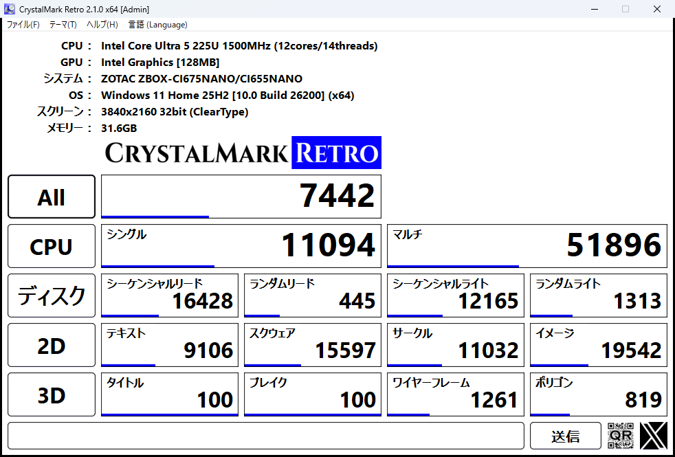
事務作業の体感 — シングルスレッドはファン付きの上位機と同等
Office、ブラウザ、Web会議、業務システムの画面遷移。日常の事務作業で「速い / 遅い」を感じる場面の多くは、 1スレッドあたりの速さで決まります。CrystalMark Retro のシングルスレッド指標（cpu_single）で見ると、 本機は 11,094 — ファンを搭載する上位機とほぼ同じ値でした。 合成ベンチマークの1指標なので実アプリの応答そのものではありませんが、1スレッド律速の作業で上位機に近い快適さが期待できる水準です。
CrystalMark Retro 2.1.0 — cpu_single（シングルスレッド）
score・高いほど良い / 中央値
ZBOX CI655 nanoCore Ultra 5 225U
11,094
ZBOX edge MI656Core Ultra 5 225H
11,046
ZBOX edge MI676Core Ultra 7 255H
10,925
ZBOX PRO S35N150PIntel N150
6,728
比較対象の MI656 / MI676 は、同じ計測プランで別途実測したファン搭載機です。 ファンレスの本機と、ファン付きの上位機で、シングルスレッドの値がほぼ並ぶ — これが本機の性格を最もよく表しています。 一方、全コアを使うマルチスレッド指標（cpu_multi）では差がはっきり出ます。
CrystalMark Retro 2.1.0 — cpu_multi（マルチスレッド）
score・高いほど良い / 中央値
ZBOX CI655 nanoCore Ultra 5 225U
51,980
ZBOX edge MI656Core Ultra 5 225H
93,330
ZBOX edge MI676Core Ultra 7 255H
97,612
ZBOX PRO S35N150PIntel N150
14,804
マルチはH系2機の約53〜56%。ただし N150搭載機に対しては約3.5倍で、 事務アプリを何本も開いたままにする使い方の余裕は、エントリー級とは明確に違います。 「一瞬の反応は上位機と同等、長時間の重い一括処理では差がつく」 — これが選定の軸になります。
まとめて処理する力 — 7-Zip 43,713 MIPS
全コアを使い切ったときのスループットを、7-Zip 26.00 の内蔵ベンチマークで測ります。 圧縮・展開を14スレッドで回した実測は 43,713 MIPS（3回の中央値・cv 1.02%）。 内訳は圧縮 44,509 MIPS / 展開 42,838 MIPS でした。
7-Zip 26.00 — CPUベンチマーク（Total Rating）
MIPS・高いほど良い / 3回の中央値
ZBOX CI655 nanoCore Ultra 5 225U
43,713
ZBOX edge MI656Core Ultra 5 225H
75,268
ZBOX edge MI676Core Ultra 7 255H
83,847
ZBOX PRO S35N150PIntel N150
13,849
ファン付きの上位機に対して約52〜58%、N150機に対して 約3.2倍。 大量ファイルの圧縮・展開、まとまったデータの一括処理といった「待ち時間が発生する仕事」が日常的にあるなら上位機、 事務アプリ中心で、時々そうした処理が入る程度なら本機の領域です。
数値のばらつき（cv）は 1.02%。3回とも 43,104〜44,188 MIPS の範囲に収まっており、 同じ処理を繰り返しても同じ時間で終わるという意味での安定性は高いといえます。
ストレージ — M.2 は PCIe 4.0 x4 が2基
テスト個体のシステムドライブ（1TB NVMe SSD・PCIe 4.0 x4）での実測は、 シーケンシャル読取 3,696 MB/s（SEQ1M Q8T1）、書込 3,263 MB/s。 ランダム4K（Q1T1）は読取 53.66 MB/s / 書込 129.25 MB/s でした。
| CrystalDiskMark 9.0.3 | 読取 (MB/s) | 書込 (MB/s) |
|---|---|---|
| SEQ1M Q8T1 | 3,696.32 | 3,262.85 |
| SEQ1M Q1T1 | 1,970.22 | 2,608.74 |
| RND4K Q32T1 | 359.85 | 308.38 |
| RND4K Q1T1 | 53.66 | 129.25 |
この値の読み方
本機はベアボーンで、SSDは製品の一部ではありません。上の数値はテスト個体に搭載したSSDの性能であり、
機種の優劣として比較できるものではありません。本機で意味があるのは
「M.2 NVMe PCIe 4.0 x4 のスロットを2基持ち、搭載するSSD次第でこの水準の速度が期待できる」という点です
（PCIe 4.0 x4 の帯域上限そのものを測ったテストではありません）。
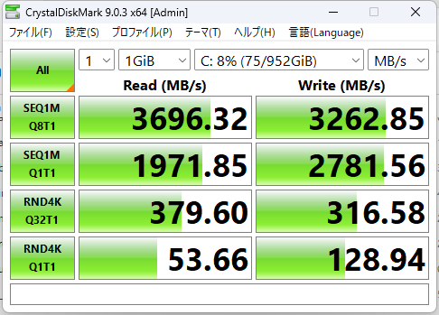
無音で回し切る仕組み — 15Wに張り付き、2.5GHzで走り続ける
ここからは、全テストを通して約1秒間隔で記録した 8,262サンプルの温度・電力・クロックのタイムラインを見ます。 セッション全体（2時間47分）のパッケージ温度は 中央値61°C / 95パーセンタイル86°C / 最大91°C。 ただし 90°C以上は全体の0.1%（8サンプル）にとどまる瞬間的なスパイクで、 負荷時の持続域は60〜84°Cです。5種13回のベンチマークはすべて停止なしで完走しました。
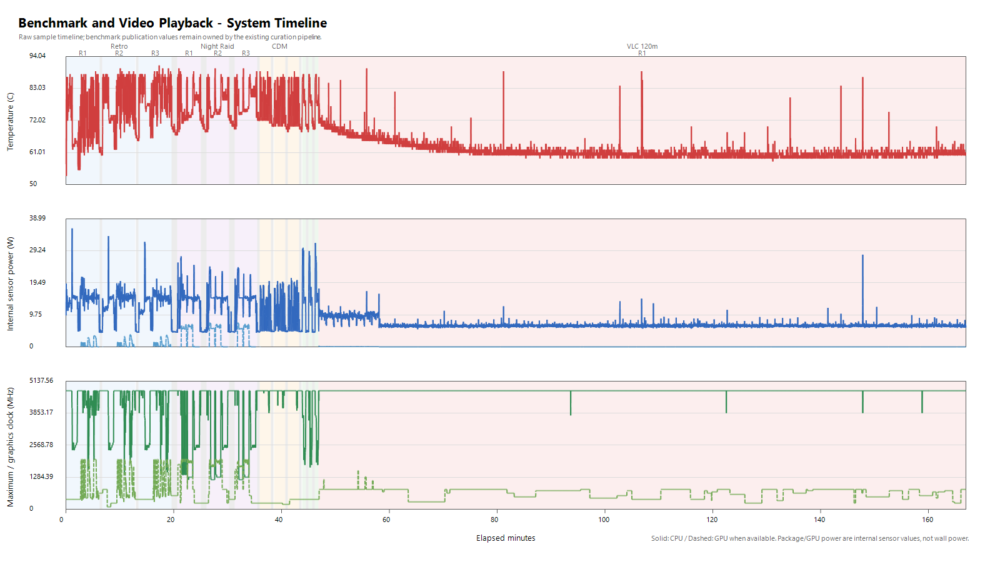
読み取れることは3つあります。
1. 持続電力は約15Wに張り付く。 Night Raid・7-Zipとも CPU電力の中央値は 14.9〜15.0W で、 CPU-Zが示すTDP Limit 15.0Wと一致します。瞬間的には36.1Wまで上がりますが、それは短時間のスパイクだけ。 ファンレス筐体が捨てられる熱量の範囲で、電力を上限まで使い切っている状態です。
2. 負荷時の最大コアクロックは約2.5GHz。 アイドルや軽負荷では4,757MHzを示す一方、 Night Raid中は 2,477〜2,577MHz、7-Zip中は 2,477〜2,874MHz。 ブーストの上限まで回すのは一瞬で、持続領域では2.5GHz前後で安定して走り続けます。
3. 連続実行では温度がじわりと上がる。 CrystalMark Retro を3回続けたときの中央温度は 74°C → 81°C → 84°C と上昇し、これに対応して2D描画のスコアも 9,666 → 9,106 → 8,754（テキスト項目）と逓減します。 ファンで熱を運び出さない構造上、この2D項目では連続実行のたびに値が下がり、実運用の定常は3回目寄りという読み方が要ります （全テストが同じ傾向というわけではなく、Night Raid は1回目だけが低く出ています。理由は付録に記載）。
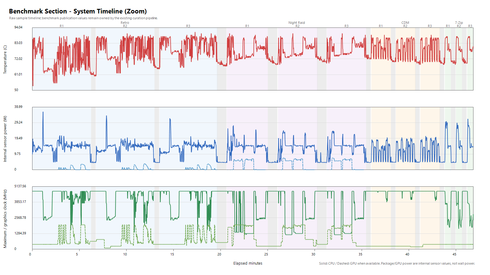
作業別の温度サマリー — 記録した全ワークロード
各テストの実行区間だけを切り出した集計です。クロックは最大コアの値（実効・平均ではありません）、 CPU電力はパッケージ内部センサーの値（システム全体の消費電力ではありません）。
| 区間 | サンプル | 平均CPU負荷 | パッケージ温度 中央/最大 | CPU電力 中央/最大 | 最大コアclock 中央 |
|---|---|---|---|---|---|
| CrystalMark Retro ×3 | 855 | 15.3% | 74–84 / 91°C | 14.7 / 36.1W | 4,757MHz |
| 3DMark Night Raid ×3 | 604 | 20.6% | 75–77 / 90°C | 14.9 / 27.6W | 2,477–2,577MHz |
| CrystalDiskMark ×3 | 310 | 4.2% | 81 / 89°C | 13.3 / 21.0W | 4,757MHz |
| 7-Zip ×3 | 69 | 73.0% | 79 / 88°C | 15.0 / 31.7W | 2,477–2,874MHz |
| VLC 1080p 120分 | 6,051 | 1.1% | 61 / 90°C | 6.4 / 28.1W | 4,757MHz |
| テスト間クールダウン | 350 | 0.6% | 64–71 / 78°C | 4.5–4.7W | 4,757MHz |
全コア負荷の 7-Zip でも中央79°C・最大88°Cで、電力を15Wに保ったまま完走しています。 一方、動画の連続再生は中央61°C・6.4W。同じ筐体でも、仕事の種類によって発熱がはっきり分かれることが分かります。 なお、マザーボード温度とGPU温度・ファン回転数は本機の環境では取得できないため、本記事の温度はすべてCPUパッケージ温度です。
測定条件
温度は本個体の実測値で、室温・設置環境・個体差により変動します（実測は空調のある室内・机上に単体で設置した状態）。
什器内への設置やモニター背面への固定など、周囲の空気が動きにくい条件では値が変わります。
CI655 で足りる仕事、CI675 を選ぶ仕事
2機の違いは CPU グレードだけです（§01）。 筐体・冷却・インターフェースが共通である以上、選定は「どんな処理をどれだけ続けるか」の一点に絞られます。
| CI655 nano（Core Ultra 5 225U） | 事務アプリ・ブラウザ・Web会議が中心で、重い一括処理は時々。あるいは案内表示・資料表示の機として常時稼働させる。本記事で実測した挙動がそのまま当てはまるのはこちら。 |
|---|---|
| CI675 nano（Core Ultra 7 255U） | 同じ設置条件のまま、CPUグレードを一段上げたい場合。本記事に CI675 の実測値はありませんので、性能差はカタログ仕様の範囲でご判断ください。 |
※ どちらを選んでも、外形寸法・設置方法・ポート構成・メモリー上限は変わりません。設置設計を先に固めてから、CPUグレードだけを後で決められる構成です。
想定される用途
適所マップ
向いている
- 事務機として — 無音で仕事に集中できる。省スペース・VESAで背面設置
- マルチメディア機として — 静かな空間でリッチコンテンツを再生し続ける
- 受付・案内表示・簡易サイネージ — 1080p連続再生が定常6.3W
- 静粛性が要る場所 — 役員室・相談ブース・図書室・診察室
- ほこりの多い場所・手の届きにくい場所 — 吸気機構がなくフィルター清掃やファン交換が不要
ほかを検討したい
- 長時間の動画エンコード・RAW現像など全コアを回し続ける作業 → H系搭載機
- 3Dゲーム・GPUレンダリング → 単体GPU搭載機
- シリアル通信・ウォッチドッグ・広動作温度が要る産業設備 → ZBOX PRO
- 4面以上のマルチディスプレイ → 出力数の多い上位機
構成のカスタマイズについて
本機はベアボーンのため、メモリー・SSD・OSを業務に合わせて選定できます。構成を組み込んだシステム販売にも対応しているため、
定番構成のままの導入も、案件ごとの細かな構成変更も、開発・デザイン・製造まで一気通貫の ZOTAC だからこそご相談いただけます。
まとめ — 静けさが、置ける場所と使い道を決める
ZBOX CI655 nano の実測から見えたのは、「熱を音に変えずに処理し切る」という設計の一貫性でした。 持続CPU電力は15Wの枠に張り付き、最大コアは2.5GHz前後を維持したまま、5種13回のテストを停止なしで完走。 温度は持続60〜84°Cで、90°C超は全体の0.1%にすぎません。
性能の位置づけははっきりしています。体感を決めるシングルスレッドはファン付きの上位機と同等、 マルチはH系2機の約53〜56%、内蔵グラフィックスは約70%。N150クラスの機種に対しては Night Raid・7-Zip・cpu_multi で約3.2〜4.2倍。 つまり「N150では足りないが、事務席にファンの音は置きたくない」という要求に対する答えが本機です。
そして 1080p の連続再生は 6.3W・60°C・負荷1.1% で定常。 静かな空間で映像を流し続ける機としても、無理のない範囲に収まっています。 設置面では 1.79L の筐体に VESAプレートが同梱され、机上・什器内・モニター背面のいずれも最初から選べます。 加えて空気を吸い込む機構がないぶん、ほこりの多い場所でもフィルター清掃やファン交換という保守が発生しません。 静かさと保守の軽さは、どちらも「回転部品がない」という同じ構造から来ています。
なお本記事の数値はすべて CI655 nano の実測です。上位の CI675 nano は筐体・冷却・I/Oが共通で、 違いはCPUグレードのみ。設置設計を変えずにCPUだけを選び分けられる構成になっています。
付録: 全ベンチマーク結果
本機（CI655 nano）の元数値を一覧にまとめます（計測条件は §03 参照）。 内蔵グラフィックスの省電力機のため、3DMark の上位テスト・GPUレンダリング等の単体GPU前提のテストは実施していません。
| テスト | 各回の値 | 中央値 | cv% | 計測回 |
|---|---|---|---|---|
| 3DMark Night Raidscore・高いほど良い | 15,096 / 16,370 / 16,335 | 16,335 | 3.72 | 3 |
| 〃 Graphicsscore | 19,846 / 22,578 / 22,616 | 22,578 | 5.98 | 3 |
| 〃 CPUscore | 6,407 / 6,400 / 6,347 | 6,400 | 0.42 | 3 |
| 7-Zip 26.00 CPUMIPS・高いほど良い | 44,188 / 43,104 / 43,713 | 43,713 | 1.02 | 3 |
| VLC 3.0.23 1080p ループ再生 120分継続性エビデンス | 7,200s 完走・rate 1.0004・D3D11VA有効 | 完走 | — | 1 |
| CrystalMark Retro 2.1.0 Allscore・高いほど良い | 7,460 / 7,442 / 7,285 | 7,442 | 1.06 | 3 |
| 〃 cpu_singlescore | 11,587 / 11,094 / 10,584 | 11,094 | 3.69 | 3 |
| 〃 cpu_multiscore | 52,583 / 51,896 / 51,980 | 51,980 | 0.59 | 3 |
| CrystalDiskMark 9.0.3 SEQ1M Q8T1 読取MB/s・テスト個体構成 | 3,711.53 / 3,398.20 / 3,696.32 | 3,696.32 | 4.00 | 3 |
凡例: cv＝変動係数（標準偏差÷平均×100%）。 Night Raid は1回目のみ Graphics が低く出ています（19,846 → 22,578 / 22,616）。CPUスコアは3回とも安定しており（cv 0.42%）、 グラフィックスドライバー更新直後の初回実行に伴うものとみられます。中央値運用のため代表値への影響はありません。 CrystalDiskMark も1回目のみ書込が低く（1,305 → 3,264 / 3,263 MB/s）、SSD側の立ち上がりとみられます。 ストレージ系の値はテスト個体のSSD構成に依存する参考値です。
よくある質問
ファンレスで事務作業に足りますか？
体感を左右するシングルスレッド性能は CrystalMark Retro の cpu_single で 11,094 — ファンを搭載する上位機（Core Ultra 5 225H＝11,046 / Core Ultra 7 255H＝10,925）とほぼ同じ値です。Office・ブラウザ・Web会議のような1スレッドの速さで決まる作業では、上位機に近い快適さが期待できます（実アプリの応答性そのものは計測していません）。差が出るのは長時間の重い一括処理で、7-Zip ではH系2機の約52〜58%、cpu_multi では約53〜56%です。
CI675 nano と CI655 nano の違いは何ですか？
違いは CPU グレードだけです。CI675 nano は Core Ultra 7 255U、CI655 nano は Core Ultra 5 225U を搭載し、どちらも12コア/14スレッド構成。筐体（204×129×68mm・約1.79L・完全ファンレス）、インターフェース、メモリー上限（DDR5-5600/5200 SO-DIMM ×2・最大64GB）、ストレージ構成（M.2 NVMe PCIe 4.0 ×4 が2基）はすべて共通です。なお本レビューで実測したのは CI655 nano です。
ファンレスで熱は大丈夫ですか？
約1秒間隔・8,262サンプルのタイムラインでは、CPUパッケージ温度は中央値61°C・95パーセンタイル86°C・最大91°C。90°C以上は全体の0.1%（8サンプル）にとどまる瞬間的なスパイクで、負荷時の持続域は60〜84°Cです。5種13回のベンチマークはすべて停止なしで完走しました。持続CPU電力は中央値14.9〜15.0Wで、TDP枠15Wに張り付いたまま処理を続けています（本個体の実測値で、室温・設置環境により変動します）。
動画の連続再生やサイネージ用途に使えますか？
VLC による 1080p 動画の120分連続ループ再生を停止なしで完走しました（再生レート 1.0004・D3D11VA ハードウェアデコード有効）。開始30分以降は 60〜61°C・6.3W・CPU負荷1.1% でほぼ定常となり、以後90分間ほぼ変化しません。映像出力は HDMI 2.1 ×1 と DisplayPort 1.4 ×2 で最大3画面に対応します。ただし2時間の実測範囲での結果であり、24時間365日の耐久を保証するものではありません。
メモリーやSSDは後から増やせますか？
本機はベアボーンで、メモリー（SO-DIMM ×2・最大64GB）とストレージ（M.2 NVMe PCIe 4.0 ×4・2280 が2基。うち1基は SATA3 兼用）を導入時に選定します。テスト個体は DDR5-5600 16GB×2 と 1TB NVMe SSD の構成でした。構成込みでのご相談も承っています。